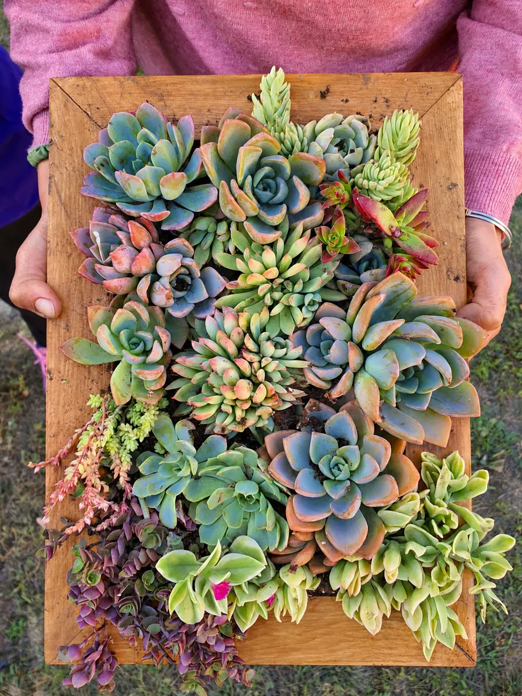

2.1 / VENÍ A COMPARTIR
Sumate por tu cuenta o con alguien más a un encuentro con fecha e inscripción previa.

HECHO A MANO EN LA PATAGONIA
Cuadros vivos, creaciones y encuentros para darle vida a lo cotidiano.
Encontrá tu cuadro ↗01 / CUADROS VIVOS
Un marco, tierra y suculentas. Elegí cómo querés recibir el tuyo: listo para disfrutar o para vivir la experiencia de armarlo.
Tres opciones · Deslizá para recorrerlas 1 de 3
PIEZAS PARA ENCONTRAR SU LUGAR
Explorá las piezas y consultá por la que te guste. Confirmamos precio y disponibilidad al conversar.
02 / TALLERES
Compartí la experiencia de crear con suculentas. Elegí cómo querés vivir el encuentro.
03 / CREACIONES
Artesanías y piezas para encontrarles un lugar en tu vida.
Un lugar especial para tus imágenes.
Detalles hechos a mano para tus espacios.
UNA COLECCIÓN EN CONSTRUCCIÓN
Estamos preparando las piezas y sus fotografías.
¿Tenés algo en mente? ↗04 / PERSONALIZADOS
No hace falta que tengas todo resuelto. Contame lo que imaginás y pensemos juntos cómo darle forma.
4.1
¿Querés darle vida a una pared? ¿Viste una creación que te gustaría adaptar a tu espacio?
4.2
Suculentas para acompañar una celebración, un encuentro o un recuerdo compartido.
4.3
¿Tenés una medalla o un objeto que querés destacar? Podemos pensar un marco o una forma especial de mostrarlo.
05 / COMUNIDAD · ENCONTRÁ TU INSPIRACIÓN
Cuadros que encontraron su lugar, plantas y momentos compartidos. Un espacio para mirar, inspirarse y acompañar lo que crece.
Imágenes de inspiración de nuestros cuadros y encuentros. Esta galería no indica disponibilidad para la venta.
06 / CONTACTO
Un cuadro, un taller o algo que todavía no existe. Contame qué estás imaginando.
Prepará tu consulta y elegí enviarla por WhatsApp o abrirla en tu aplicación de correo. Vos revisás el mensaje antes de enviarlo.
Este proyecto nació de una idea: hacerle lugar a la naturaleza donde parecía que no lo había. Soy Ulises y mi primer cuadro vivo surgió en un patio interior con poco espacio para plantas. Hoy comparto esa experiencia de crear algo que sigue creciendo y cambiando con la luz, los cuidados y el paso del tiempo.
Y lo lindo viene después: encontrarle un lugar, disfrutarlo cada día y recordar cómo empezó.
Ulises,
en su taller.
DE UN HOBBY A UN EMPRENDIMIENTO
Este proyecto nació de una idea: hacerle lugar a la naturaleza donde parecía que no lo había. Soy Ulises y mi primer cuadro vivo surgió en un patio interior con poco espacio para plantas. Hoy comparto esa experiencia de crear algo que sigue creciendo y cambiando con la luz, los cuidados y el paso del tiempo.
Y lo lindo viene después: encontrarle un lugar, disfrutarlo cada día y recordar cómo empezó.